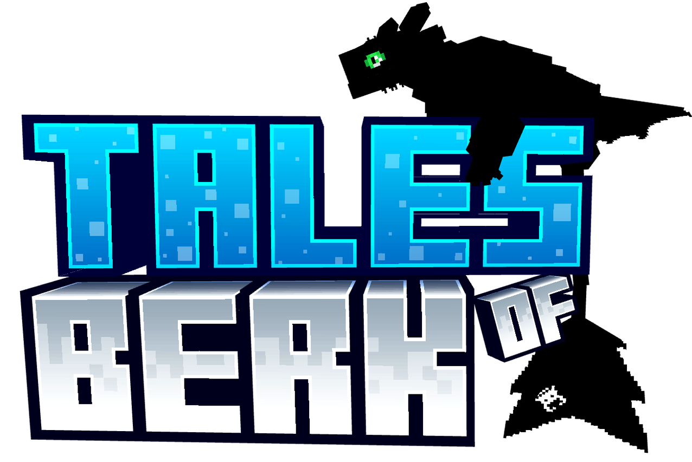
Addon
Veja todos os dragões disponíveis na versão Bedrock.
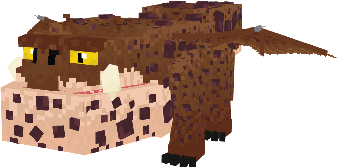
Gronckle
Spawn: Montanhas.
Como Domar: Pedras em geral
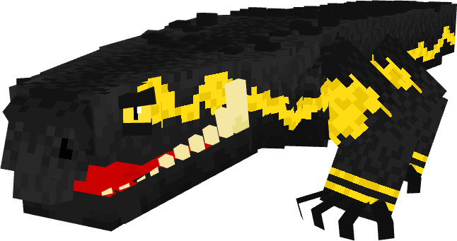
Invasor de Cavernas
Spawn: Mesa.
Como Domar: Ovo de qualquer dragão
Condições Especias: Tem que ser filhote para ser domado.

Cauda Fina
Spawn: Selva.
Como Domar: Bacalhau Cru, Bacalhau Assado.
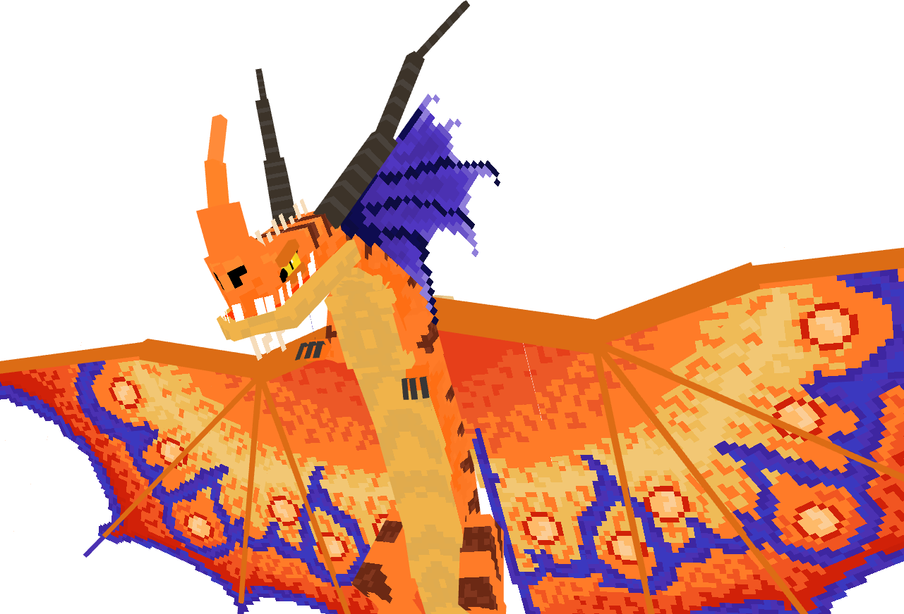
Canção Da Morte
Spawn: Floresta Florida
Como Domar: Bacalhau Cru, Bacalhau Assado, Salmão Cru, Salmão Assado.
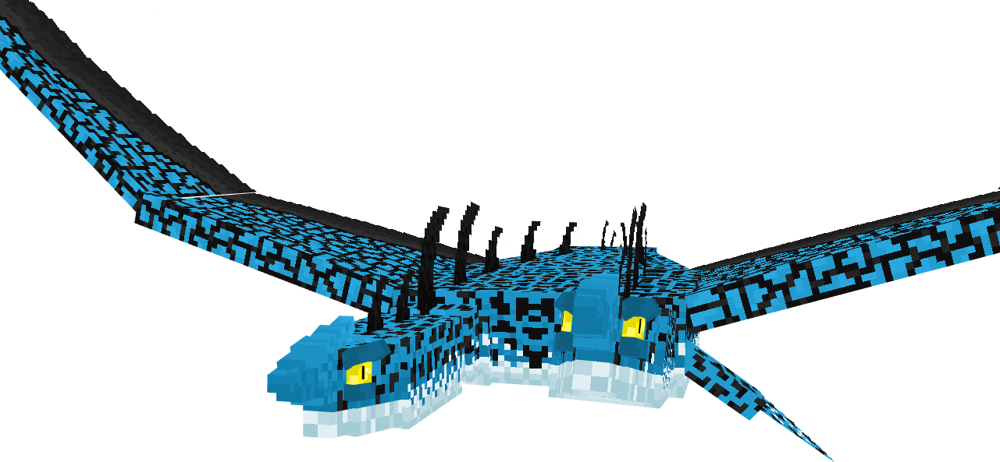
Terror Dos Mares
Spawn: Oceanos.
Como Domar: Peixe Tropical.
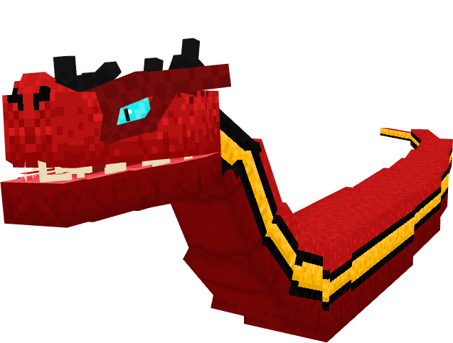
Asa Serpente Macho
Spawn: Planices.
Como Domar: Carne de Porco Cru ou Assada.
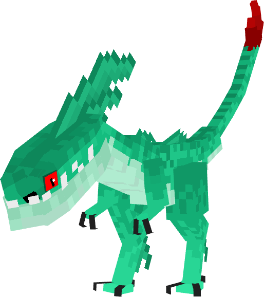
Picada Veloz
Spawn: Sempre perto do Picada Veloz Alfa.
Como Domar: Salmão Cru.
Condições Especias: Tem que ser filhote para ser domado.
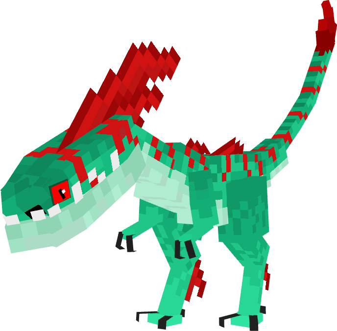
Picada Veloz Alfa
Spawn: Savana.
Como Domar: Salmão Cru.
Condições Especias: Tem que ser filhote para ser domado.
Mod
Conheça os dragões disponíveis na versão Java.
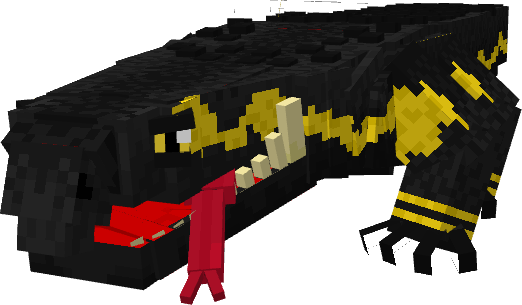
Invasor de Cavernas
Spawn: Eroded_badlands, Badlands, Wooded_badlands.
Como Domar: Frango Cru.
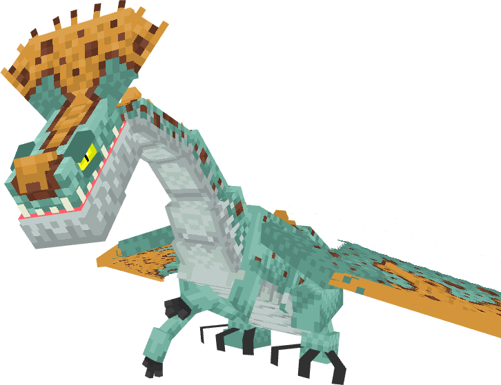
Cauda Fina
Spawn: Sparse_jungle, Jungle, Bamboo_jungle.
Como Domar: Bacalhau Cru.
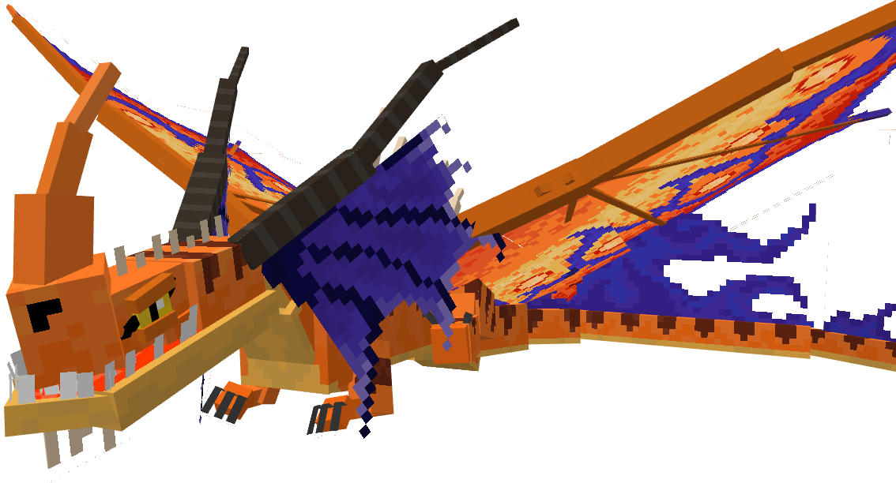
Canção Da Morte
Spawn: Sunflower_plains
Como Domar: Bone Feed Bundle.
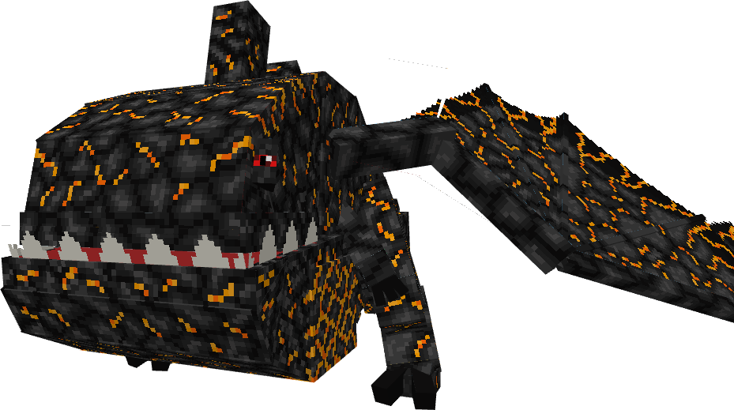
Eruptidão
Spawn: Gerado pelo mundo em uma arena na badlands, derrotando ele vai dropar um ovo que pode vim uma das suas variantes.
Como Domar: Bloco de Magma.
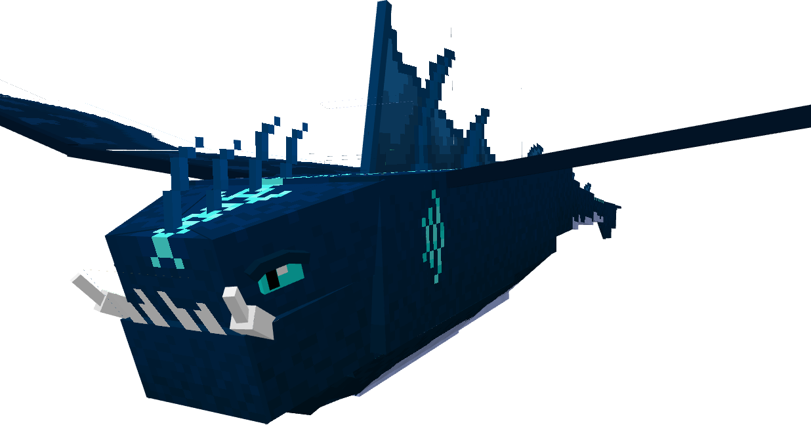
Presa de Inundação
Spawn: Beach, River.
Como Domar: Peixe Tropical.
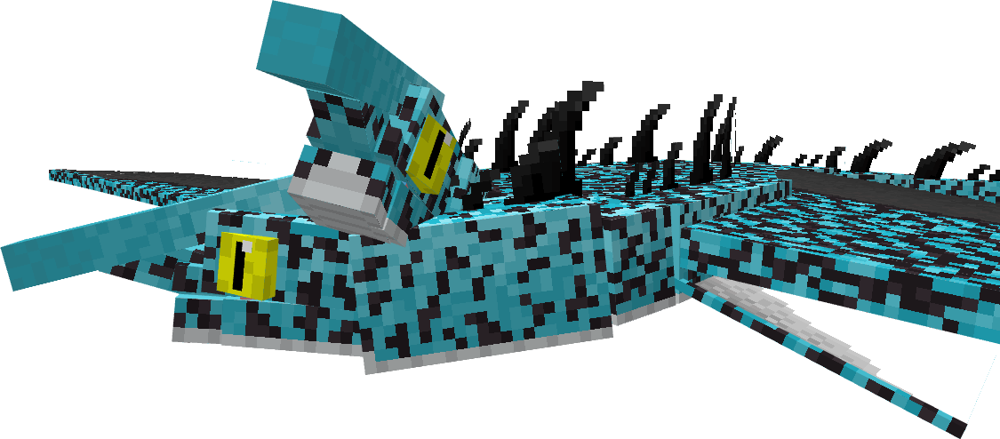
Terror Dos Mares
Spawn: Seu ninho aparece em Oceanos.
Como Domar: Peixe Tropical.
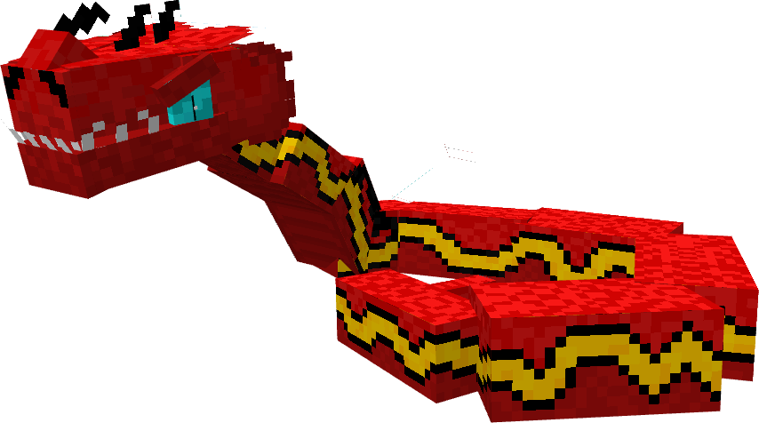
Asa Serpente Fêmea
Spawn: Encontrado em ninhos e tem a chance de ter um ovo da versão macho Asa de Titan .
Como Domar: Carneiro Cru.
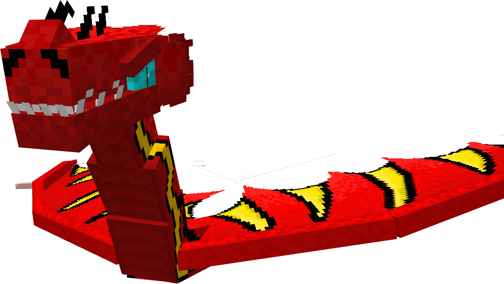
Asa Serpente Macho
Spawn: Savanna, Sparse_jungle.
Como Domar: Bife Cru.
Download
Baixar o Mod (Java Edition)
Versâo mais recente 2.0.2
Changelog Version 2.0
- 2 novos dragões
- Invasor de Cavernas e Cauda Fina
- Remodel no Canção da morte
- Problemas com Spawn corrigidos
- Livro dos dragões completo
- Agora é possivel usar Floodfang e Terror dos mares na água
Baixar o Addon (Bedrock Edition)
Changelog Version 1.1
- Novo peixe gato que spawna em rios
- Peixe gato faz breeding dos dragões
- Ferro gronckel (criado na crafting tabble e interagir no gronckel para assar)
- Armadura e espada de ferro gronckel
- Nova estrutura, acampamento de caçadores de dragões
- Projétil personalizado pro gronckel
- Itens decorativos, banco e fogueira
Versão para Minecraft Bedrock 1.21+
Baixar Addon